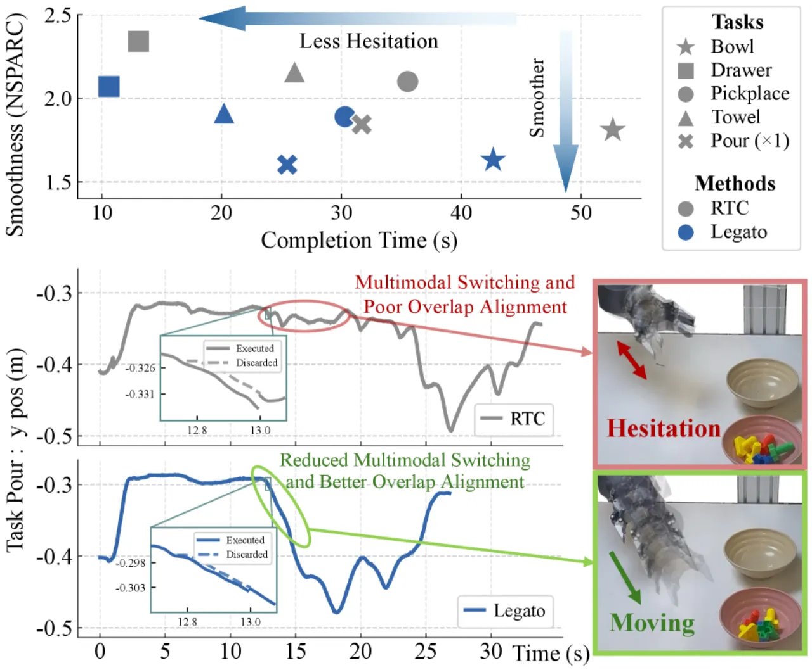
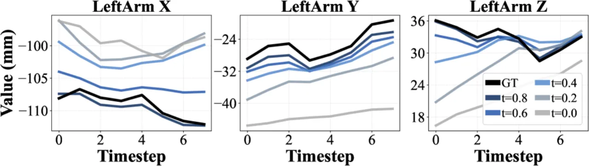
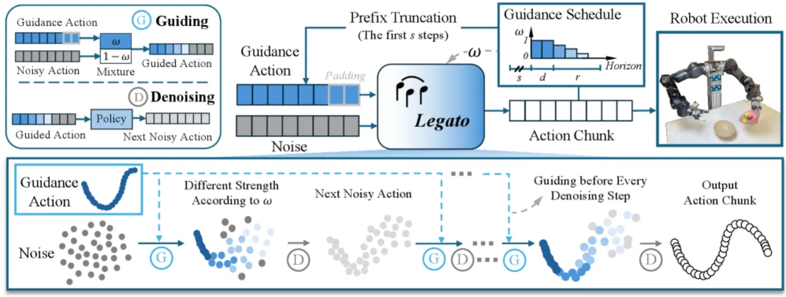
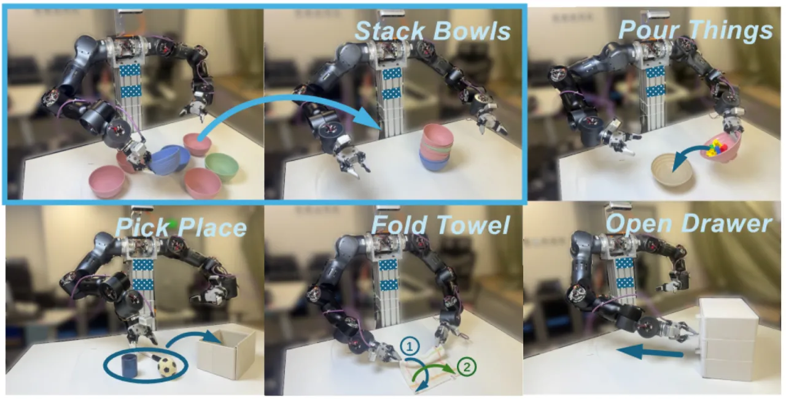
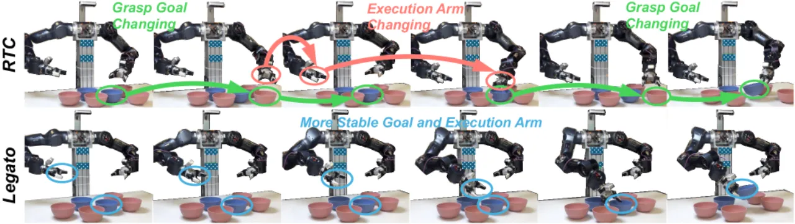
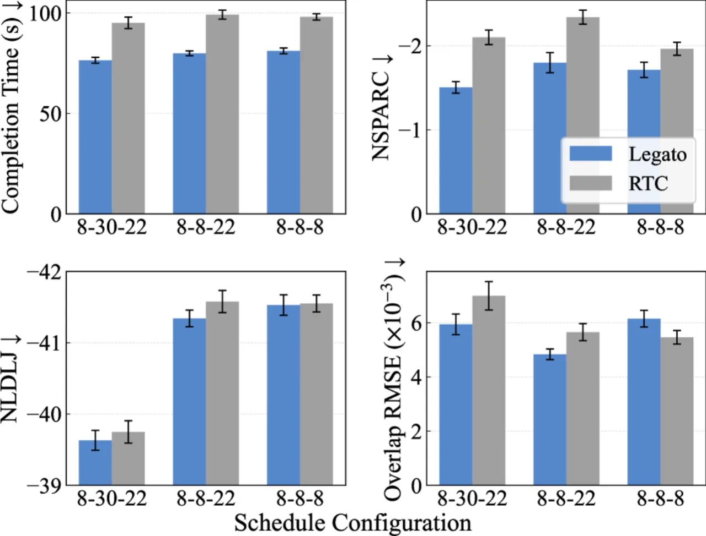

Action chunking 让 VLA 模型得以实时运行，但 chunk 边界处的不连续性会导致机器人犹豫、抖动与模态切换。Legato 通过训练时的 schedule-shaped 引导与速度场重塑，使策略在推理时自然延续，无需外部补丁。在五项真实双臂操作任务上，Legato 相比 RTC 将轨迹平滑度与完成时间均提升约 10%。
Action chunking 是让大型 VLA 模型在机器人上实时运行的关键技术——每次推理预测一段动作序列（chunk），避免逐帧调用昂贵模型。然而，当前一个 chunk 执行完毕、新的 chunk 接续时，两段轨迹之间往往出现明显的跳变与不连续。
原始 action chunking 的执行在 chunk 边界处会产生速度/加速度跳变，机械臂抖动明显，影响任务成功率。
Real-Time Chunking (RTC) 在推理时做 inpainting，将已执行动作作为约束注入去噪过程。但它与训练目标不一致，导致虚假模态切换（spurious multimodal switching）——机械臂在不同抓取目标和执行臂之间反复横跳，产生大量犹豫动作。
"RTC applies inference-time inpainting... leading to spurious multimodal switching and trajectories that are not intrinsically smooth."


Legato 的核心思路是将 continuation 约束直接编码进 flow matching 的训练目标，使网络在推理时能够自然地延续已执行的前缀动作，而无需任何推理时 patch。

s 为每个周期执行的动作长度；d 为完全引导的前缀长度（inference delay）；r 控制引导强度在剩余 horizon 上的线性衰减长度。训练时随机采样 (d, s, r) 并条件化，使单一模型适应不同推理延迟。去噪的起点不再是纯噪声，而是混合了已知前缀动作 A 与噪声 ε 的有效噪声：
ε_eff = (1 − ω) ⊙ ε + ω ⊙ A
其中 ω 是 schedule-shaped 的引导权重向量，前缀区域权重接近 1（强约束），远端逐渐降为 0（自由生成）。这使模型在去噪起点便已感知到部分动作信息。
训练目标被重新加权，前缀区域的速度场目标受到抑制：
v_target = (1 − κ ⊙ (1 − t)) ⊙ (A − ε)
这使得网络在高引导区域倾向于"停留"，而非切换到另一种模态，从根本上抑制了虚假模态切换。
在推理时，每步去噪后都会重新施加引导，等效于如下 ODE：
Ẏ(t) = (1 − ω) ⊙ f_θ(Y(t), t) − κ ⊙ (Y(t) − A)
Legato 通过推导网络目标使训练动力学与上述推理 ODE 精确一致，消除训练-推理的不对齐（training-inference inconsistency）。
训练时随机采样 (d, s, r) 三元组，并将其作为额外条件输入策略网络。这使得单一模型即可适应不同推理延迟，无需为每种延迟单独训练。

在真实双臂机器人上评估五项操作任务，每个任务 30–50 次 trials，与 RTC 及其训练时版本进行对比。评估指标涵盖任务完成得分、完成时间、NSPARC（频域平滑度）、NLDLJ（冲击积分）和 Overlap RMSE（chunk 边界一致性）。
| 任务 | 完成时间 RTC (s) | 完成时间 Legato (s) | NSPARC RTC | NSPARC Legato | Overlap RMSE RTC (×10³) | Overlap RMSE Legato (×10³) |
|---|---|---|---|---|---|---|
| Bowl（叠碗） | 52.88 ± 3.54 | 42.66 ± 2.68 | 1.82 ± 0.04 | 1.63 ± 0.02 | 6.83 ± 0.50 | 4.58 ± 0.17 |
| Pour（倒水） | 95.07 ± 2.86 | 75.73 ± 1.51 | 2.85 ± 0.24 | 1.65 ± 0.08 | 7.64 ± 0.70 | 5.14 ± 0.17 |
| PickPlace（拾放） | 35.53 ± 1.24 | 30.37 ± 0.65 | 2.10 ± 0.08 | 1.89 ± 0.05 | 10.17 ± 0.66 | 5.98 ± 0.40 |
| Drawer（抽屉） | 25.97 ± 0.74 | 21.80 ± 0.72 | 2.24 ± 0.05 | 1.99 ± 0.08 | 12.11 ± 0.66 | 11.74 ± 0.55 |
| Towel（毛巾） | 25.93 ± 0.98 | 20.00 ± 0.78 | 2.17 ± 0.07 | 1.97 ± 0.05 | 11.28 ± 0.55 | 6.22 ± 0.66 |
| 方法 | 完成时间↓ (s) | NSPARC↓ | Overlap RMSE↓ (×10³) |
|---|---|---|---|
| Training-Time RTC | 81.73 ± 1.12 | 2.46 ± 0.14 | — |
| Legato | 75.73 ± 1.51 | 1.65 ± 0.08 | 5.14 ± 0.17 |

通过改变 (d, s, r) 三元组进行调度参数消融（Table III）：减小 stride 可提升 overlap 一致性（Overlap RMSE↓），但可能轻微牺牲全局平滑度；schedule conditioning（条件化调度参数）对两个指标均有稳定改善（Table IV）。π₀ 主干模型上也复现了 Legato 的优势（Table V，完成时间 88.30s vs RTC 92.93s），证明方法的通用性。

论文指出："the denoise step is specified at training time, limiting the ability to adjust it during inference." 一旦训练完成，不同推理延迟只能通过 schedule conditioning 来适配，无法完全自由地改变去噪步数。
论文将 "more flexible native continuation schemes" 列为未来工作方向，暗示当前 schedule-shaped 线性衰减的引导形式尚有局限，更复杂的引导曲线或自适应调度仍待探索。
Legato 的速度场重塑与 per-step guidance ODE 专为 flow-based 策略设计。能否推广到扩散（diffusion）或自回归动作策略尚未验证。
所有实验均在固定桌面操作场景下进行，对移动操作、腿式机器人或高动态任务的泛化能力尚未验证。